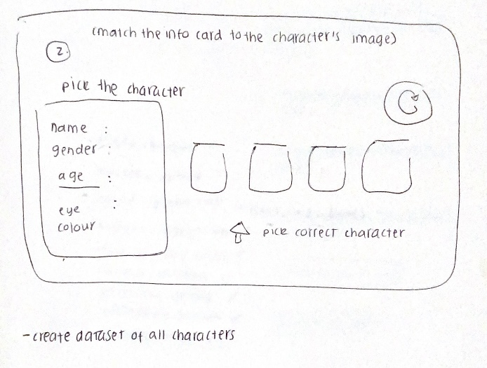

Advanced data art
My initial data art was a collage therefore with my advanced art I wanted to make create something a lot more technically challenging. I decided to make a game, as this would require more meaningful interaction from the player. The game centres around the Studio Ghibli characters as the player is provided with a short physical description of the character, and they are then required to guess which out of the 4 presented faces is the character being described. The user can then click on the image which most resembles the correct face.
After the players has guessed an image description correctly, the description and images will refresh so that they can play again. Pressing the play button also refreshes the character description and the images presented. Therefore if a player does not want to play a certain round they can use the play button a s a sort of refresh.
Figure 1. showing planning process for the game.
For future improvements. I would like to use node.js to cycle through files in directory instead of manually inputting them into the array. I also would like to add the player’s score and storing it in a database, so that the player can replay the game multiple times in an attempt to beat their high score. Another idea I had was to set a timer to limit the number of seconds the player has to make a selection.
I think my data art supports my visualisation in the sense, that it provides player with a more in depth view of what the movies and the characters look like. The aim of my site is to convert people into fans of the franchise, therefore snapshots of what each character looks like, gives users a good impression of what types of animation the movies are made of as well as the range of character art used throughout all of the movies.